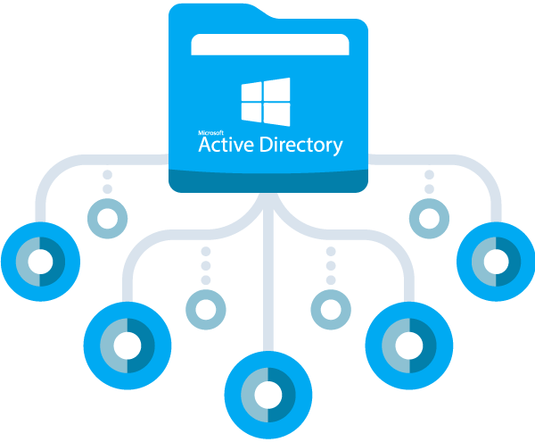
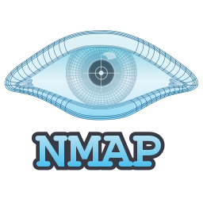
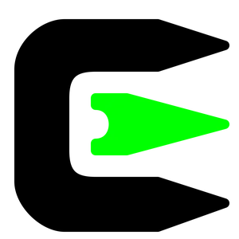
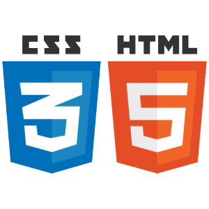
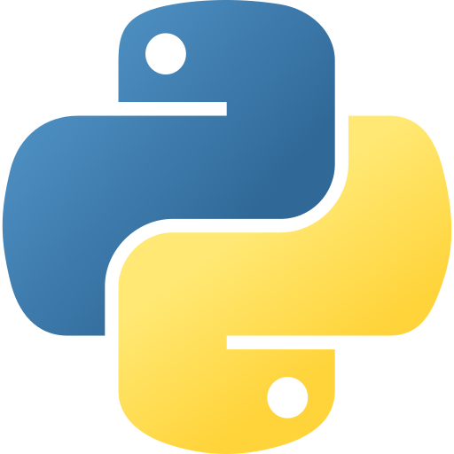

Mes Compétences
Systèmes, réseaux, sécurité et développement — mes savoir-faire en un coup d'œil.
Systèmes & Réseaux
Linux (Debian)
Installation, configuration et gestion des serveurs sous Debian.
VMware / VirtualBox
Création et gestion de machines virtuelles pour tester des environnements.
Cisco / Packet Tracer
Configuration de réseaux, routage, VLANs et simulation avec Cisco PT.
Windows Server
Installation et administration : DNS, DHCP, GPO, AD DS et gestion des rôles.

Active Directory
Gestion des utilisateurs, groupes, OU, stratégies de sécurité et domaine.
Vagrant
Automatisation de la création d'environnements virtuels reproductibles.
Wireshark
Analyse de paquets réseau, diagnostic de trafic et identification d'anomalies.

Nmap
Scan de ports, découverte d'hôtes et audit de sécurité réseau.

Cygwin
Environnement Unix sur Windows pour exécuter des commandes Linux.
Développement & Outils

HTML / CSS
Création de sites web modernes, responsives et accessibles.

JavaScript
Ajout d'interactivité et d'animations aux pages web.

Python
Scripts d'automatisation et outils pour faciliter les tâches système.
Docker
Création et déploiement de conteneurs pour isoler des applications.
SQL / MySQL
Conception de bases, requêtes SQL, jointures et gestion des utilisateurs.
Git / GitHub
Versioning, branches, pull requests et collaboration via GitHub.